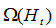

Funkcija za sažimanje poruka Groestl je jedan od finalista SHA-3 natječaja kojeg je raspisao National Institute of Standards and Technology (NIST). Glavno obilježje Groestla jest to da je on skup funkcija sažimanja razvijen u mnogim varijantama s različitim veličinama izlaza. Zasnovan je na funkciji za računanje sažetka i kompresijskoj funkciji u okviru koje se pozivaju P-permutacija i Q-permutacija.
Programski proizvod nastao u okviru kolegija Projekt iz programske potpore je aplikacija u C# programskom jeziku. Ona je implementacija Groestla, funkcije za sažimanje poruka. Programsko rješenje uglavnom slijedi izvorni algoritam. Razlika je u implementaciji proširenja ulazne poruke gdje je korišten padding algoritma AES. Inače je aplikacija razvijena korištenjem osam klasa:
Groestl algoritam je prepoznatljiv kao skup funkcija za sažimanje poruka. Kolika će biti duljina izlaza, ovisi o tome koju verziju Groestla pokrenemo. Naime, Groestl se u literaturi pojavljuje kao Groestl-n gdje n označava broj bita u izlaznoj poruci. Tako postoje verzije Groestl-224, Groestl-256, Groestl-384 i Groestl-512. Varijante se međusobno razlikuju samo u početnoj vrijednosti i konačnom sažimanju za produkciju hash vrijednosti. U okviru algoritma implementirane su hash funkcija, kompresijska funkcija, funkcija za rad s permutacijama te izlazna funkcija. Kao zasebna klasa implementirano je računanje ekskluzivnog ili budući da se koristi jako mnogo puta.
Nakon što se zadaju ulazna poruka koji treba sažeti i duljina izlazne poruke u bitovima, ti se parametri šalju u hash funkciju gdje se ulazna poruka dijeli u više blokova koji se procesiraju u kompresijskoj funkciji. Svi se blokovi procesiraju zasebno, ali u ovisnosti o prethodnom bloku.
H0 je pridružen IV, inače početna vrijednost. Ulazi u kompresijsku funkciju , Hi-1 i Mi, duljine su l bita baš kao i izlaz Hi. Parametar l se određuje prema duljini sažetka, tj. prema duljini izlazne poruke i u svim je varijantama barem dva puta veći od n. Nakon što se svi blokovi obrade, izlazna transformacija  se pokreće i na daje konačnu n-bitnu hash vrijednost h. Bitno je naglasiti da duljina svih blokova treba biti jednaka pa se stoga treba provesti punjenje, odnosno proširenje ulazne poruke (eng. padding). Duljina poruke treba biti višekratnik broja l pa se poruka nadopunjuje dodavanjem bita 1 nakon čega sliijedi (N-65 mod l) bitova 0 te na kraju 64-bitni binarni zapis broja blokova koji predstavlja ograničenje na maksimalnu duljinu poruke.
Kompresijska funkcija f se temelji na dvije l-bitne permutacije: P-permutaciji i Q-permutaciji. Ona se definira na sljedeći način:
Kompresijska funkcija grafički se prikazuje na sljedeći način:
Kao što je na slici vidljivo, u kompresijskoj funkciji koriste se dvije permutacije, P i Q. Ulaz u P permutaciju je rezultat operacije ekskluzivno ili između bloka poruke i ulančanog ulaza.
Prikaz programskog ostvarenja
Izlaz je pak rezultat iste funkcije, ali ovaj put između izlaza iz permutacije P i permutacije Q.
U okviru permutacija trebaju se izvesti četiri transformacije:
Permutacije P i Q se razlikuju samo u konstantama koje se koriste u tranformacijama AddRoundConstant i ShiftBytes te u broju koraka. Groestl-256 ima 10 koraka i pridružene permutacije P512 i Q512, a Groestl-512 14 koraka te permutacije P1024 i Q1024. Najprije se ulaz podijeli po bajtovima tako da se matrica puni redak po redak. Broj redaka je uvijek 8, a mijenja se broj stupaca. Za l = 512, broj stupaca je 8, a za l = 1024, broj stupaca iznosi 16.
AddRoundConstant se sastoji od operacija ekskluzivnog ILI između redaka matrice stanja i konstanti koje se razlikuju za P i Q permutacije. Matrica stanja se mijenja u ovoj transformaciji na sljedeći način:
gdje je C[i] konstanta različita za P i Q pa prva C[i] je konstanta za P512, druga za Q512, treća za P1024, a četvrta za Q1024 permutaciju.
U okviru ove transformacije primjenjuje se S-Kutija na svaki član matrice. Svaki se element matrice dobije tako da se zamijeni odgovarajućim elementom S-kutije.

Programski prikaz transformacije SubBytes
ShiftBytes ciklički rotira elemente u pojedinom retku matrice ovisno o verziji algoritma i vrsti permutacije. Polja posmaka su zadana na sljedeći način:
za permutaciju P512
za permutaciju P1024
za permutaciju Q512
za permutaciju Q1024
Ova transformacija množi svaki redak A matrice konstantom koja je predstavljena kao kružna matrica B dimenzija 8 x 8.

U matrici B su konstante elementi konačnog polja GF (28) definirani polinomom
8-bitna vrijednost x u binarnom zapisu
se tada predstavi koristeći polinom u konačnom polju GF (28):
Množenje x*y u polju GF(28) definirano je kao polinomno množenje modulo polinom Budući da bi ovaj način bio jako spor, koristi se učinkovitija implementacija transformacije MixBytes koja koristi posmak bitova i XOR operaciju:
Alternativno rješenje funkcije MixBytes
U izlaznoj funkciji se generira n-bitni izlaz:
Ht je izlaz iz zadnjeg poziva kompresijske funkcije koji se dovodi na permutaciju P čiji izlaz potom u operaciji ekskluzivni ILI s istim Ht daje izlaz iz izlazne funkcije, a time i iz algoritma Groestl. U gornjem prikazu truncn odbacuje sve znakove osim zadnjih n bita rezultata XOR operacije.
U aplikaciji je predviđeno mjesto za unos teksta za sažimanje nakon čega slijedi odabir verzije Groestl algoritma. Inače je Groestl algoritam razvijen za različite duljine izlaza, a ova aplikacija je razvijena za inačice Groestl-256 i Groestl-512. Unosom teksta i odabirom verzije algoritma aplikacija se pokreće pritiskom na gumb POKRENI, a njezin se rezultat može vidjeti u heksadekadskom zapisu.
Razvijena aplikacija
Sve neoznačene slike su preuzete iz gore navedene literature.